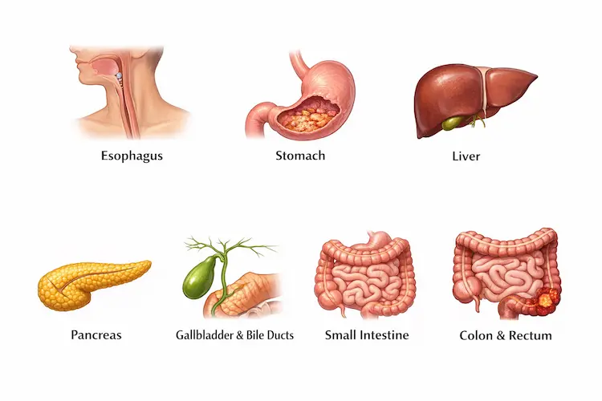
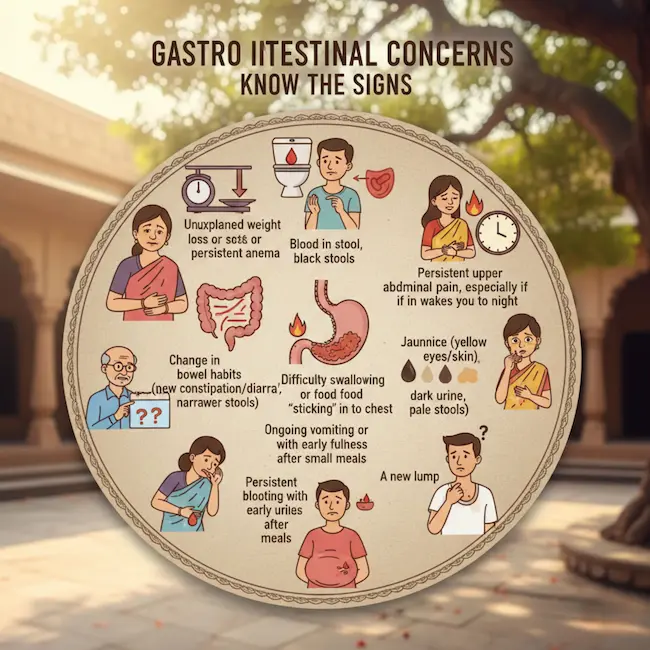
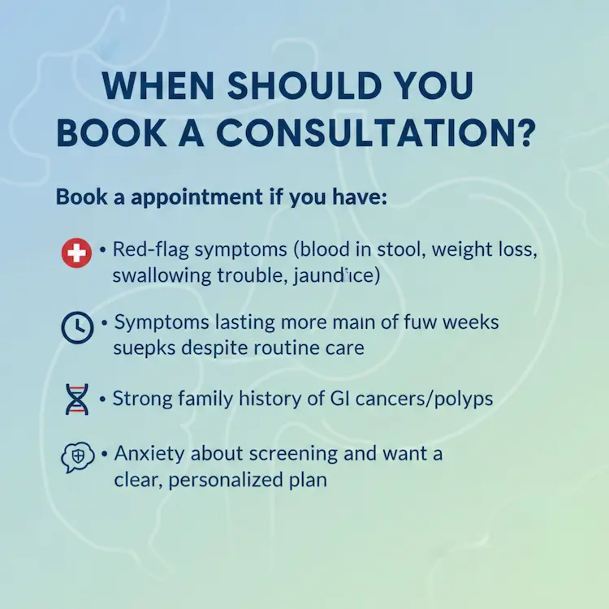

In Kolkata, we often brush off gut symptoms as “gas,” “acidity,” or “something I ate.” A late dinner after work, weekend biryani, extra cha, street food cravings—most of us have been there.
What is GI cancer?
“GI cancer” is an umbrella term for cancers that occur anywhere in the digestive system, including:
- Esophagus (food pipe)
- Stomach
- Liver
- Pancreas
- Gallbladder and bile ducts
- Small intestine
- Colon and rectum (colorectal cancer)

Each has different patterns, risk factors, and treatments—but they often share one common truth: the earlier they’re found, the more treatable they tend to be.
Why Kolkata families should pay attention
Kolkata isn’t unique in having GI cancer risk—but some everyday exposures can increase the chances over time. Common contributors include:
- Smoking and tobacco use (including smokeless forms)
- Alcohol
- Long-standing acidity/GERD (reflux symptoms that don’t improve)
- Obesity, fatty liver, diabetes, and sedentary lifestyle
- Chronic hepatitis B or C (raises liver cancer risk)
- High intake of ultra-processed foods, excess oil, low fiber
- Family history of GI cancers or polyps
- Certain infections and long-term inflammation in the gut
This doesn’t mean everyone with acidity or constipation has cancer—most don’t. But it does mean we should learn which symptoms deserve a proper evaluation instead of repeated self-medication.
Symptoms you should never ignore (the “red flag” checklist)
If you notice any of the following, it’s wise to consult a GI specialist or GI cancer surgeon:
- Unexplained weight loss or loss of appetite
- Blood in stool, black stools, or persistent anemia
- Change in bowel habits (new constipation/diarrhea, narrower stools) lasting weeks
- Persistent upper abdominal pain, especially if it wakes you at night
- Difficulty swallowing or food “sticking” in the chest
- Ongoing vomiting or vomiting blood
- Persistent bloating with early fullness after small meals
- Jaundice (yellow eyes/skin), dark urine, pale stools
- A new lump, fluid in the abdomen, or unexplained fatigue

Think of it like this: common symptoms become concerning when they are new, persistent, progressive, or paired with weakness/anemia/weight loss.
Screening and early detection: the smartest step
Many GI cancers start quietly. That’s why screening matters—especially for people with age-related risk, family history, or long-standing symptoms.
Colorectal cancer screening is one of the most effective because many cancers develop from polyps over time. Screening can detect polyps early and remove them. Screening options may include stool-based tests or colonoscopy, depending on risk profile.
For stomach and esophagus, an upper GI endoscopy helps when reflux is persistent, swallowing becomes difficult, or there’s ongoing pain, vomiting, or unexplained anemia.
For liver cancer, people with chronic hepatitis or cirrhosis often need regular follow-up and monitoring as advised by their doctor.
For pancreatic cancer, population-level screening is not routine; however, high-risk individuals (strong family history or certain genetic risks) may need specialized surveillance.
If you’re unsure whether you need screening, a consultation can help you decide the safest, most practical plan—without unnecessary tests.
How diagnosis usually happens (simple, step-by-step)
At Advitya Healthcares, the evaluation typically follows a structured approach:
- Detailed history (symptoms timeline, diet, habits, family history)
- Clinical examination
- Basic blood work (including anemia and liver-related markers when needed)
- Imaging such as ultrasound/CT/MRI depending on symptoms
- Endoscopy/colonoscopy when indicated
- Biopsy to confirm diagnosis if a suspicious lesion is found
- Staging to understand how localized or advanced the disease is
This step-wise approach avoids panic testing while still moving fast when red flags are present.
Treatment options: not “one-size-fits-all”
GI cancer treatment depends on the cancer type, stage, and the patient’s overall fitness. Common modalities include:
- Surgery (often the main curative option for localized cancers)
- Chemotherapy
- Radiation therapy (in selected cancers)
- Targeted therapy / immunotherapy (for specific cancer profiles)
- Supportive care: nutrition, pain management, gut symptom control, recovery planning
The goal is always to choose the most effective approach with the least avoidable burden, while preserving quality of life.
Advitya Healthcares in Kolkata: where care feels structured and human
When someone hears the word “cancer,” the first need is clarity: What is it? How serious? What do we do next? At Advitya Healthcares, patients in Kolkata benefit from a focused GI pathway that emphasizes:
- Clear evaluation for suspicious GI symptoms
- Guidance on the right investigations (not random test shopping)
- Multidisciplinary planning (surgery + oncology coordination when required)
- Support with nutrition and recovery planning
- Focused expertise for complex GI and HPB (liver–pancreas–bile) conditions through PancreaCare by Advitya Healthcares
Whether your concern is persistent reflux, bowel changes, jaundice, or unexplained weight loss—starting with the right specialist can save critical time.
Prevention in daily Kolkata life (practical, doable)
While not all GI cancers are preventable, risk can often be reduced:
- Quit smoking/tobacco and avoid gutka/betel-nut habits
- Keep alcohol limited or avoid it
- Aim for more fiber: vegetables, fruits, whole grains, dal
- Reduce ultra-processed foods and repeated deep-fried meals
- Maintain healthy weight and regular walking
- Manage diabetes and fatty liver early
- Treat long-standing acidity/GERD instead of living on antacids
- Take hepatitis vaccination advice seriously (when indicated)
When should you book a consultation?
Book an appointment if you have:
- Red-flag symptoms (blood in stool, weight loss, anemia, swallowing trouble, jaundice)
- Symptoms lasting more than a few weeks despite routine care
- Strong family history of GI cancers/polyps
- Anxiety about screening and want a clear, personalized plan

Final thought: In Kolkata, we’re experts at adjusting to discomfort—but GI cancer care rewards the opposite habit: act early, check properly, and move with clarity. If something feels “not normal for me,” that’s reason enough to get evaluated.

PancreaCare by Advitya Healthcares supports advanced care for liver–pancreas–bile and complex GI concerns.
Book a consultation at Advitya Healthcares (Kolkata) for a structured GI evaluation and the right next steps.
Disclaimer: This content is for awareness only and does not replace medical advice.
FAQ section
- What is the most common early warning sign of GI cancer?
There isn’t one single sign, but the most important are persistent symptoms—especially blood in stool, unexplained weight loss, anemia/weakness, swallowing difficulty, or jaundice. - Can young adults get GI cancer?
Yes—though risk increases with age, younger people can also develop GI cancers. In younger adults, red flags (blood in stool, weight loss, anemia) deserve attention, not assumptions. - What does “GI cancer screening” mean?
Screening means checking for cancer (or pre-cancer) before severe symptoms appear, using tests like stool tests, colonoscopy, and endoscopy, depending on risk and symptoms. - How do I prepare for my first consultation?
Carry your previous reports, list of medicines, symptom timeline (when it started, what worsens/relieves), family history, and any recent weight change details. - What is PancreaCare by Advitya Healthcares?
It’s the focused initiative under Advitya Healthcares for pancreas–bile–liver (HPB) and complex GI conditions, helping patients get structured evaluation and coordinated care.
Have a question this article does not answer?
Send us your reports. A specialist reviews them before you travel, so the first visit begins with a plan rather than a repeat test.